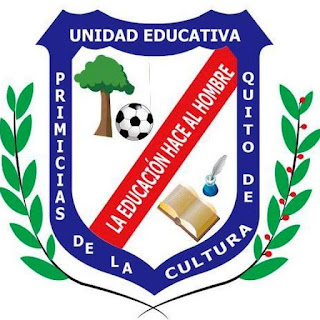
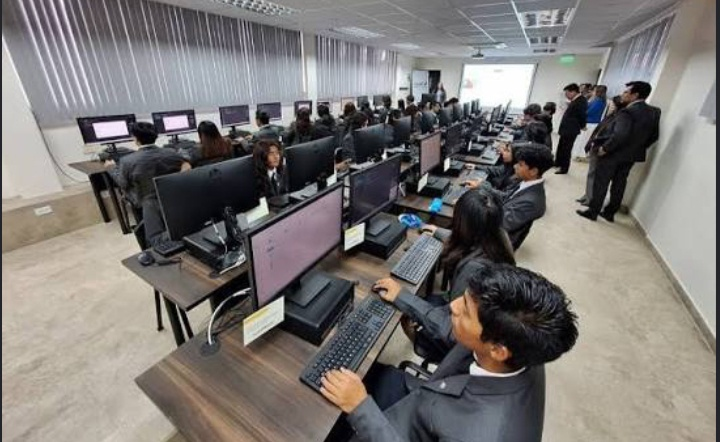
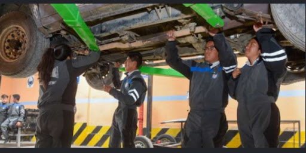
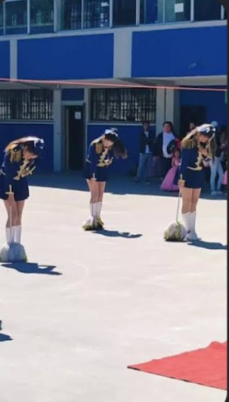
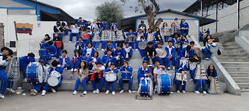
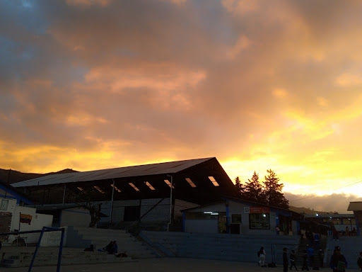

Digital Magazine 2026
“Discover our history and culture”
Student: Lisbeth García
Course: 3ro Info A
Teacher: Msc. Carina Luna
Institution: Unidad Educativa Fiscal Primicias de la Cultura de Quito
Welcome to this digital magazine showcasing the history and culture of Primicias de la Cultura de Quito High School. The purpose of this project is to share our traditions, stories, and student experiences. I decided to study Informatics because I wanted to learn new tech skills, explore the world of programming, and build creative digital projects like this website. I want to highlight how our technical institution inspires innovation, knowledge, and integrity every day.
The Unidad Educativa Fiscal "Primicias de la Cultura de Quito" has a long history of academic and technical excellence. Our beloved institution was founded in 1976 to provide quality education to the youth in the south of Quito.
The school was created to inspire students based on the critical and scientific ideals of Eugenio Espejo. Its name honors the first newspaper in Ecuador, which was founded by him in 1792.
Over the years, the institution changed and grew significantly. It started as a small school, but it became a very important reference for technical education, especially in the specialties of Informatics and Automotive Mechanics.
Our institution has beautiful traditions that bring students together every year. One of the most important celebrations is the School Anniversary (Fiestas del Colegio), where we celebrate our identity with academic events, artistic festivals, and special presentations by our Peace Band and Majorettes.
We also celebrate the Fiestas de Quito in December with traditional games, music, and typical dances. This activity helps us remember our historical roots, show city pride, and strengthen teamwork and friendship among all courses.
Finally, sports are a fundamental part of our school culture. The soccer championships (campeonatos de fútbol) generate a lot of enthusiasm, where each class competes with discipline, leadership, and institutional pride.
Mgs. Damaris Gavilanes (Principal): She is the main authority and principal of our institution. She works hard every day to lead our high school with academic and technical success. Thanks to her administration, our community continues to improve its educational standards, safety, and school facilities for all active students.
Msc. Carina Luna (English Teacher): She is our language educator who guides third-year students in their interdisciplinary magazine projects. She helps us develop our technical communication and English skills for the modern world. Her constant guidance is essential for our academic success and future life.
Mgs. Estela Calvache (Entrepreneurship Teacher): She is an outstanding high school educator who teaches Entrepreneurship and Management (Emprendimiento). She guides third-year students to develop business mindsets, financial planning, and professional skills for the modern world. Her class promotes critical thinking, strategic planning, and creative solutions.
Mgs. Marcela Cajas (Chemistry Teacher): She is a dedicated teacher who inspires our scientific and academic growth through Chemistry (Química). She helps us understand complex chemical formulas, laboratory experiments, and scientific methods with great patience. Her effort is very important for our responsibility, scientific research, and intellectual innovation.
Mgs. Andrés Almeida (Mathematics Teacher): He is an excellent educator who supports our numerical and scientific skills in Mathematics (Matemáticas). He motivates students to solve complex algebraic calculations, logical equations, and practical geometry problems. Through his methodology, he teaches us the values of intellectual discipline and critical thinking.
Mgs. Jorge Zumba (Physical Education Teacher): He is a key high school instructor who guides students through physical health, sports, and Physical Education (Educación Física). He teaches us essential training habits, athletics coordination, and soccer tactics. His professional dedication encourages team spirit, body discipline, and health values.
Mgs. Geovany Portero (Technical Support Teacher): He is an outstanding technical instructor who teaches Technical Support (Soporte Técnico) in Informatics. He shares important knowledge regarding computer maintenance, hardware troubleshooting, operating systems, and computing safety. He encourages third-year students to build successful tech solutions for the community.
Mgs. David Salazar (Physics Teacher): He is an outstanding high school educator who teaches Physics (Física) to third-year students. He guides us to understand the laws of nature, energy, and universe mechanics through logical experiments and mathematical calculations. His dedication helps us develop strong analytical skills, scientific curiosity, and problem-solving abilities for our technical careers.
Mgs. Mercedes Posso (Biology Teacher): She is a dedicated high school teacher who guides students through the fascinating world of Biology (Biología). She organizes interdisciplinary learning tasks about ecosystems, cell structures, and environmental sciences. Her education promotes ecological respect, human health awareness, and commitment within the classroom.
• The name of our school honors the first newspaper in Ecuador, which was founded by Eugenio Espejo in 1792.
• Our institution is incredibly big and unique because it runs three complete learning shifts: morning (matutina), afternoon (vespertina), and night (nocturna).
• It welcomes thousands of active students, being a major reference point for technical education in the south of Quito.
• The first major institutional anniversary and cultural parade of the high school was celebrated back in 2010.

The shield of Unidad Educativa "Primicias de la Cultura de Quito" represents our history, academic excellence, and the cultural legacy of our city. It stands as a symbol of pride, honoring the values of knowledge and integrity that guide our entire educational community.

The computer science area is essential in the institution because it helps students develop technological skills. Students learn basic software usage, computer handling, safe internet practices, and digital document creation. It also encourages logical thinking and problem-solving through practical activities. Computer science is a key tool for students’ academic and professional future.

The mechanics area teaches students how machines, tools, and mechanical systems work. They perform practical tasks such as disassembling, repairing, and maintaining different equipment. This specialty helps develop technical skills and discipline in work. It is an important field because it prepares students for the industrial and automotive world.

The majorettes group represents discipline, elegance, and coordination within the institution. They participate in parades, civic events, and cultural activities. Their performances combine dance, music, and coordination, showing school spirit. They are a symbol of pride in important events.

The Peace Band is one of the most representative groups of the institution. Through music, discipline, and artistic presentations, students demonstrate commitment, responsibility, and institutional identity during civic and cultural events.
The school soccer team represents discipline, teamwork, dedication, and competitive spirit. Students participate in interschool tournaments and sports activities that promote friendship, leadership, and school pride.

“The Sunset” is a cultural activity that promotes unity, reflection, and student participation. Artistic presentations, music, and social gatherings take place during this event. This activity helps strengthen values such as respect, friendship, and teamwork. It is one of the most meaningful events within the institution.
In conclusion, the institution provides a comprehensive education that combines academic learning with practical and cultural activities. Each area such as computer science, mechanics, majorettes, and cultural events contributes to important skill development.
Through these experiences, students strengthen their knowledge, values, and teamwork abilities. This prepares them for their academic and professional future, encouraging responsibility and commitment.